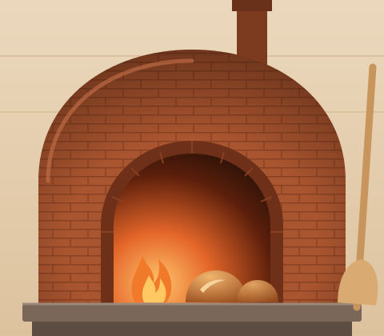
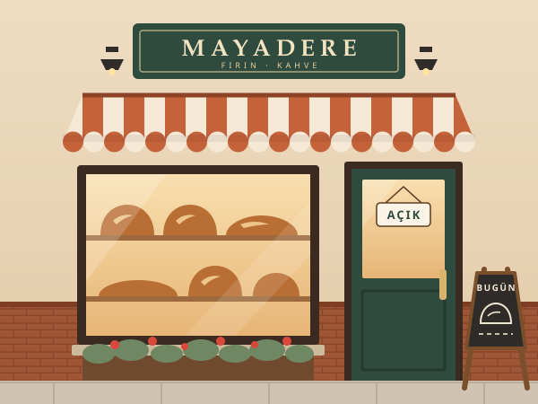
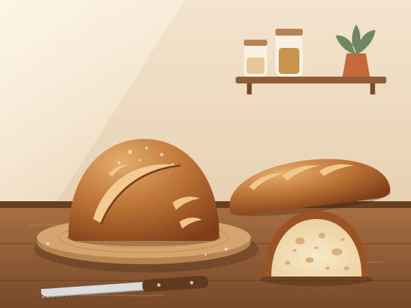
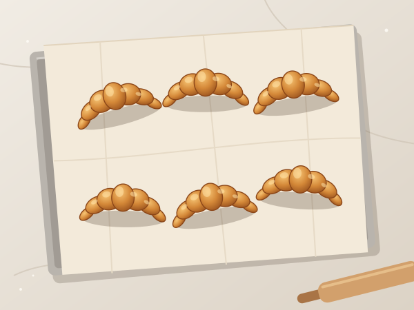
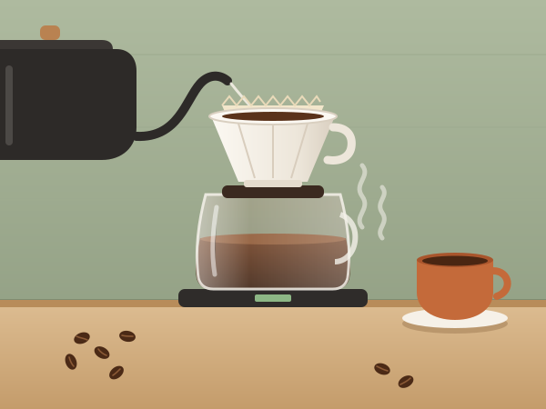
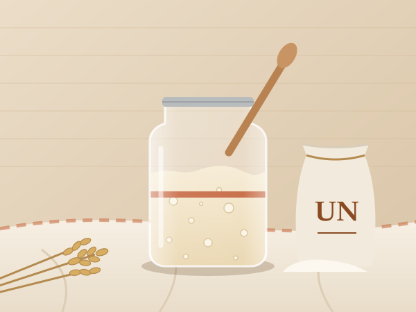
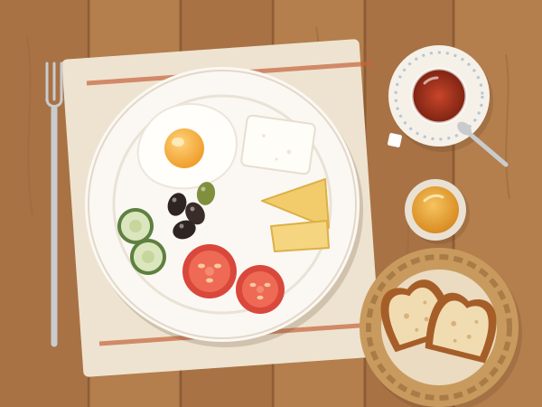

Mahalle fırını · Ankara
Ekmeğini acele etmeden yapan mahalle fırını.
Mayadere’de hamur bir gece dinlenir, sabah taş fırında pişer. Ekşi mayalı somunlar, tereyağlı kruvasanlar ve özenle demlenen kahvelerle haftanın altı günü açığız.
Hizmetler
Tezgâhta neler var?
Her şey küçük partiler hâlinde, gün içinde birkaç kez fırından çıkıyor. Günün ürünleri tükenince yenisini ertesi sabah pişiriyoruz.
-
Ekşi mayalı ekmekler
Köy ekmeği, tam buğdaylı, çavdarlı ve zeytinli somunlar. İçinde yalnızca un, su, tuz ve ekşi maya var.
-
Kruvasan ve hamur işleri
Tereyağlı kruvasan, tarçınlı çörek ve mevsim meyveli turtalar. Sabah ve öğleden sonra olmak üzere iki kez pişiyor.
-
Kahve ve çay
Filtre kahve, espresso bazlı içecekler ve demlik çay. Paket servis için kendi bardağınızı getirebilirsiniz.
-
Hafta sonu kahvaltısı
Kendi ekmeğimizle hazırlanan sade bir kahvaltı tabağı. Masa sayımız az; erken gelmenizi öneririz.
-
Toplu ve özel sipariş
Toplantı, doğum günü ve davetler için ekmek sepetleri ve hamur işi tepsileri hazırlıyoruz.
-
Ekşi maya atölyesi
Küçük gruplarla evde ekşi mayalı ekmek yapmanın temellerini birlikte deniyoruz. Mayanızı yanınızda götürürsünüz.
Hakkımızda
Küçük bir fırın, yavaş bir tarif
Mayadere, mahallenin köşesinde tek taş fırını olan küçük bir dükkân. Ekmeklerimizi hazır maya yerine kendi beslediğimiz ekşi mayayla yapıyor, hamuru acele ettirmiyoruz. Böylece kabuğu çıtır, içi nemli ve birkaç gün tazeliğini koruyan somunlar çıkıyor.
Tezgâhın öbür ucunda kahve var. Ekmeğin yanına yakışsın diye sade ve dengeli demliyoruz; sabah işe giderken uğrayan da, hafta sonu oturup gazetesini okuyan da aynı özeni görüyor.
-
Kısa bir malzeme listesi
Ekmeklerde un, su, tuz ve ekşi maya. Katkı maddesi ya da hazır karışım kullanmıyoruz.
-
Her gün yeniden
Günlük ihtiyaca göre pişiriyoruz; vitrinde dünün ürününü bekletmiyoruz.
-
Mevsimine göre
Turta ve çöreklerde mevsimin meyvesini kullanıyoruz; tezgâh bu yüzden ay ay değişiyor.

Galeri
Fırından kareler
Bu demoda fotoğraf yerine bu site için hazırlanmış çizimler kullanıldı. Sizin sitenizde bu alanda dükkânınızın, ürünlerinizin ve ekibinizin fotoğrafları yer alır.






Ziyaret
Saatler ve konum
Çalışma saatleri
| Pazartesi | Kapalı |
|---|---|
| Salı | 07:00 – 19:00 |
| Çarşamba | 07:00 – 19:00 |
| Perşembe | 07:00 – 19:00 |
| Cuma | 07:00 – 19:00 |
| Cumartesi | 08:00 – 20:00 |
| Pazar | 08:00 – 16:00 |
Resmî tatillerde saatler değişebilir. Ekşi mayalı somunlar çoğu gün öğleden sonra tükeniyor; ayırtmak için önceden yazabilirsiniz.
Konum
Mayadere durağına iki dakika yürüme mesafesindeyiz. Sokakta park yeri sınırlı.
Demo notu: Bu çizim harita gömmek yerine kullanıldı; sayfa böylece hızlı açılır ve üçüncü taraf çerezi yüklemez. Gerçek sitede “Haritada aç” bağlantısı işletmenin harita konumuna gider, istenirse harita da gömülebilir.
İletişim
Sipariş ve sorularınız için
Toplu sipariş, atölye kaydı ya da aklınıza takılan başka bir şey için formu doldurun veya bize doğrudan ulaşın.
- Telefon 0 (312) 000 00 00
- WhatsApp WhatsApp’tan yazın
- E-posta ornek@example.com
- Adres Ihlamur Sokağı No: 7, Mayadere Mah., Ankara